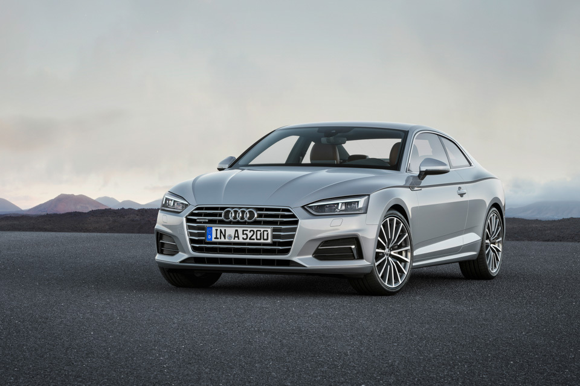
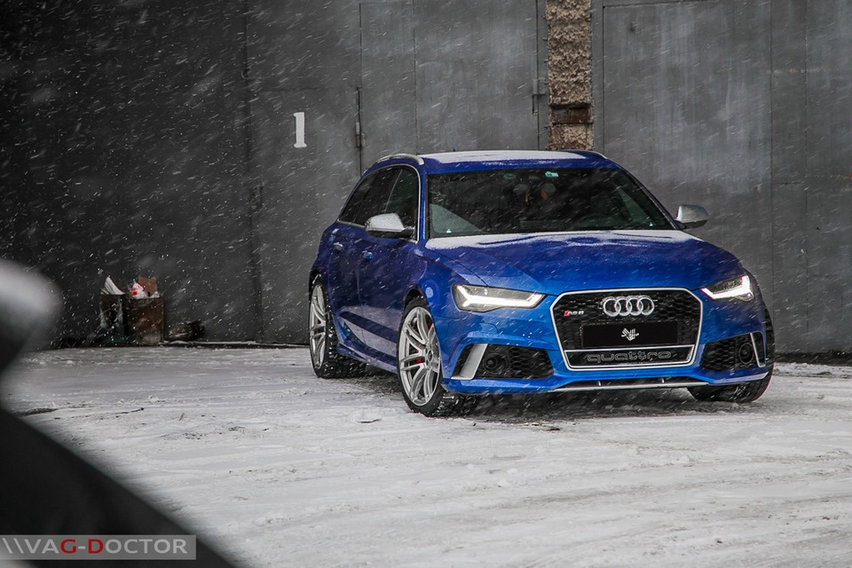

Audi A1 - спортивный, мощный и привлекательный. Будучи новичком в сегменте компактных автомобилей, он апеллирует к современным покупателям - молодым жителям города с определенным стилем жизни. Покупатели Audi A1, среди которых, как ожидается, будет немало женщин, интересуют дизайн, музыка, мода и спорт. Стоимость модели в базовой комплектации в Беларуси составит около 15 800 евро.
Audi A3
Audi A3 — хэтчбэк малого семейного класса, производимый концерном Audi с 1996 года. В 1996—2003 годах выпускалось первое поколение, с 2003 по 2012 — второе, а в 2012 появилось 3 поколение популярного в Европе компактного автомобиля.
Audi A4
Audi A4 - спортивный, прогрессивный и эмоциональный - по праву является одним из самых популярных автомобилей среднего класса. Оснащение Audi A4 значительно превосходят общепринятые стандарты в своем сегменте. Так, базовая кмплектация уже включает в себя такие премиальные опции, как климат-контроль, бортовой компьютер, аудиосистема с 8 динамиками, кожаный руль, обогрев передних сидений и аккустическая система парковки сзади.
Audi A5

Audi A5 — спортивный автомобиль (двухдверное купе на платформе Audi A4), производимый немецким aвтопроизводителем Audi с 2007 года на заводе в Ингольштадте. Audi A5 была одновременно представлена на Женевском автосалоне и Мельбурнском международном автосалоне 6 марта 2007 года. Производитель позиционирует модель как автомобиль класса Гран туризмо, тем самым заявляя его как конкурента BMW E92 (купе BMW 3-серии) и Mercedes-Benz CLK-Class (ныне выпускается как Mercedes-Benz E-Class Coupe).
Audi A6
Audi 100, с 1994 года Audi A6, — семейство автомобилей бизнес-класса, выпускающихся под маркой Audi, внутреннее обозначение — «тип C». Премьера Audi 100 состоялась в 1968 году, с августа 1994 года этот модельный ряд носит название А6. В отличие от Audi 80/A4, где переименование совпало с выпуском новой модели, первый А6 представлял собой рестайлинговую версию последнего Audi 100. Сегодня Audi A6 предлагается в четырехдверной версии с кузовом седан и в пятидверной версии Avant (универсал), ранее выпускались также двухдверные модели, купе и хэтчбек. Спортивная модификация А6 производится под наименованием Audi S6, а наиболее мощная версия A6 производится под наименованием RS6, что расшифровывается как "RennSport".
Audi A7
Audi A7 Sportback (код кузова — 4G) — пятидверный фастбэк класса Гран Туризмо, выпускаемый AUDI AG, на платформе А6, позиционируется в сегменте ниже Audi A8. Его основные конкуренты — Mercedes-Benz CLS и BMW 6 Gran Coupe. Федеральное автотранспортное ведомство ФРГ позиционирует A7 в верхнем сегменте среднего класса. Спортивными версиями являются S7 и RS7. Автомобиль базируется на концепте Audi Sportback Concept, при этом его дизайн заметно консервативнее и ориентирован на другие модели марки Audi. Тот же стиль продолжил и Audi A6 C7, выпуск которого начат в 2011 году. В отличие от кузова салон серийного автомобиля практически полностью позаимствован у концепт-кара. Средний коэффициент аэродинамического сопротивления Audi A7 равен 0,28. Задний спойлер автоматически выдвигается на скорости от 140 км/ч.
Audi A8
Седан представительского класса Audi A8, дебютировавший в 1994 году, стал флагманской моделью концерна Ауди. Это был первый серийно выпускаемый автомобиль люкс-класса с кузовом из алюминиевого сплава.
Audi Q2
Если коротко попытаться выразить суть Audi Q2, то это маленькая, яркая, но самая настоящая «честная» Audi без гулких пластмасс и явно бюджетных решений, с хорошим драйверским потенциалом. Но при этом – практичная, пригодная для повседневной езды в городе и в пределах неэкстремальных загородных маршрутов вроде дачи или горнолыжного курорта.
Audi Q3
Мировая премьера паркетника Audi Q3 состоялась в 2011 году. Главный конкурент кроссовера BMW X1 обладает ощутимо меньшей колёсной базой. Линия крыши «ку-третьей» 2013 модельного года немного опущена, задние стойки наклонены – не только по эстетическим соображениям, но и для большей жёсткости кузова. Авто смотрится гармонично, сохранив пропорции пятидверного хэтчбека. Это отражено на фото Ауди Ку3 в галерее.
Салон кроссовера выполнен из благородных материалов. При таких же передних сидениях, что и у Audi Q5, посадка в Ауди Q3 более вертикальна за счёт ровного пола. Объём багажного отсека в Audi Q3 можно увеличить, сложив спинку кресла. Дверной проём узковат.
Линейка двигателей Ауди Q3 (технические характеристики см. внизу) представлена двумя бензиновыми агрегатами TFSI мощностью 170 и 211 лошадиных сил и одним 177-сильным дизельным мотором с приводом Quattro. Двухлитровый турбодизель TDI тяговит, эластичен и неплохо ладит с роботизированной семидиапазонной коробкой передач S tronic с двумя сцеплениями.
Базовый бензиновый движок модели 2012 года компенсирует недостаток момента оборотистостью. В паре с механической «шестиступкой» с корпусом из магниевого сплава бензиновая «четвёрка» не уступает турбодизелю в паспортной динамике – те же 8.2 с. Динамические характеристики Ауди Q3 самые лучшие у топовой модификации: разгон до сотни происходит за 6.9 с.
В заявленную стоимость Audi Q3 не входит круиз-контроль, датчики парковки, электроприводы передних сидений. Даже установка сигнализации потребует доплаты в 21 487 рублей. Установленная на «упакованную» Audi Q3 цена сопоставима с BMW X1 с большим клиренсом. Базовую версию Audi Q3 можно купить за 1 319 000 рублей.
Audi Q5
Audi Q5 появился на рынке осенью 2008 года. Первоначально линейка двигателей включала в себя одну бензиновую и две дизельные модели. Бензиновый двигатель 2,0 л с непосредственным впрыском топлива и турбонаддувом развивает мощность 211 л.с. и крутящий момент 350 Н·м. В сегменте дизельных двигателей предлагаются 2-литровый TDI мощностью 170 л.с., развивающий крутящий момент 350 Н·м, и 3-литровая шестицилиндровая модель мощностью 240 л.с., выдающая крутящий момент 500 Н·м. В июле 2009 года линейка двигателей дополнилась двумя новыми моделями — 2.0 TDI 143 л.с. и 2.0 TFSI 180 л.с.
Audi Q7
Audi Q7 — полноразмерный кроссовер, выпускаемый компанией Audi. Его премьера состоялась в сентябре 2005 года на Международном автосалоне во Франкфурте. Audi Q7 базируется на концепте Audi Pikes Peak quattro, представленном в 2003 году на автосалоне в Детройте. Audi Q7 создан на платформе E. Вместе с ним на заводе Volkswagen Slovakia в Братиславе (Словакия) на этой-же платформе выпускаются модели концерна Volkswagen — Touareg и Porsche Cayenne.
Audi TT
Новое поколение Audi TT было представлено в 2014 году на автосалоне в Женеве. Автомобиль стал легче своего предшественника на 50 килограммов. Автомобиль предлагается с тремя двигателями: двумя бензиновыми и одним дизельным. Мотор на тяжелом топливе выдает 184 л. с., развивая 380 Нм крутящего момента. До «сотни» дизельная ТТ разгоняется за 7,2 секунды, а максимальная скорость ограничена электроникой на отметке 235 километров в час. Бензиновый мотор объемом 2,0 литра развивает 230 л. с. и разгоняет купе до 100 км/ч за 6 секунд. В базовой комплектации Audi TT оснащается матричными светодиодными фарами, впервые появившимися на модели A8, спортивными креслами, LED- подсветкой салона и подогревом передних сидений. Купе получило четыре звезды в краш-тестах Euro NCAP. Набрать максимальный балл автомобилю помешало отсутствие системы автономного аварийного торможения, а также других подобных передовых технологий безопасности. При фронтальном ударе машина набрала максимальное количество очков по безопасности. Даже при сильном столкновении автомобиль продемонстрировал хорошую защиту пассажиров и водителя. Однако из-за соображений безопасности Audi не рекомендуют находиться на задних сиденьях людям, рост которых превышает 1,45 метра. Защиту детей в автомобиле эксперты оценили на 68%.
Audi TT RS
Высокотехнологичный спорткар Audi TT RS выпускается с 2009 года. Впечатляющий дизайн, спортивные кресла с боковой поддержкой, многофункциональное рулевое колесо с кожаной отделкой, постоянный полный привод Quattro и спортивная подвеска делают Ауди ТТ РС настоящей находкой для любителей погонять по трассам.
Audi RS3
Компания Audi официально представила заряженный хэтчбек RS3 Sportback нового поколения. Модель получила 2,5-литровый пятицилиндровый турбированный мотор, отдача которого составляет 367 лошадиных сил и 465 Нм крутящего момента. Таким образом, новинка стала самым мощным серийным хот-хэтчем в мире, отобрав это звание у пятидверки Mercedes-Benz A 45 AMG с 360-сильной «четверкой».
Audi RS6

Современные автомобили с кузовом «универсал» давно потеряли стереотипы, связанные с концепцией простого семейного автомобиля, которого лишили каких-либо драйверских качеств. Audi RS 6 Avant тому не исключение. Этот автомобиль без преувеличения можно назвать самым быстрым универсалом на сегодняшний день. Агрессивная внешность Audi RS 6 Avant говорит сама за себя и в этом можно полностью убедиться, нажав на педаль акселератора - 3.9 с до «сотни» о многом говорят. Этот автомобиль уж точно не предназначен для неспешных поездок по семейным делам. 4.0-литровый силовой агрегат TFSI с двумя турбокомпрессорами способен продуцировать 560 л.с. Поистине «ураганный» крутящий момент в 700 Нм доступен уже с 1750 оборотов двигателя. Заявленный расход топлива - 9.6 л/100 км, что при таких характеристиках весьма впечатляет.
Новый Audi RS 6 Avant по праву можно назвать спорткаром на каждый день. Этот автомобиль показывает впечатляющие ходовые характеристики, но при этом является комфортабельным и практичным. Адаптивная пневматическая подвеска делает этот автомобиль очень устойчивым. Багажный объем в 565 л позволит без труда поместить все необходимые вещи. Спортивные сиденья RS обеспечивают прекрасную боковую поддержку. Кожаное мультифункциональное рулевое колесо с подрулевыми лепестками отличается удобством и подарит приятные ощущения. С ноября 2015 года в России стартовали продажи суперзаряженной версии Audi RS 6 Avant performance с форсированным до 605 «лошадей» двигателем.
Audi RS7
В 2013 году компания Audi расширила линейку RS новым суперспортивным имидж-каром Audi RS 7 Sportback. Автомобиль дебютировал на Североамериканском международном автосалоне в Детройте. Эффектный дизайн, эстетичные линии, инновационные технологии - все это создает неповторимый и узнаваемый динамичный образ нового Audi RS 7 Sportback. Конструкция кузовных элементов RS 7 Sportback на 20% состоит из алюминия, а также высокопрочной стали, благодаря чему инженерам из Ингольштадта удалось добиться идеальной жесткости кузова. Это обеспечивает хорошую управляемость и улучшает шумоизоляцию салона автомобиля. Спортивный характер Audi RS 7 Sportback визуально подчеркнут стильными бамперами с воздухозаборниками, решеткой радиатора ячеистой формы, легкосплавными 20-дюймовыми колесными дисками. «Заряженный» Sportback серийно оснащается адаптивной пневмоподвеской, которая обеспечивает отменный уровень комфорта. Для любителей в качестве альтернативы компания предлагает более жесткую подвеску Audi sport suspension plus с системой Dynamic Ride Control (DRC).
В базовой комплектации Audi RS 7 Sportback оснащается системой полного привода quattro с межосевым дифференциалом, который обеспечивает отличное сцепление колес с дорожным полотном и дарит водителю полный контроль над автомобилем. Система quattro в RS 7 Sportback настроена таким образом, что 60% крутящего момента передаются на заднюю ось, остальные 40% - на переднюю. Силовой агрегат V8 4.0 TFSI с двойным турбонаддувом развивает мощность в 560 л.с. Этот двигатель снабжен передовой системой отключения цилиндров: при малых нагрузках отключается 2-й, 3-й, 5-й и 8-й цилиндры, при этом закрываются соответствующие клапаны посредством электромеханических механизмов. Таким образом, мотор 4.0 TFSI работает как 4-цилиндровый до тех пор, пока водитель энергично не нажмет на педаль газа. Рестайлинговый Audi RS 7 Sportback дебютировал в рамках Московского автосалона 2014. Новинка приобрела матричную головную оптику, измененную решетку радиатора и модернизированную выхлопную систему.
Audi RS Q3
Концепт-кар заряженного кроссовера Audi Q3 с шильдиком RS был представлен весной 2012 года на Пекинском автосалоне, а уже спустя год компания официально показала в Женеве серийный вариант RS Q3. Этот спортивный автомобиль сочетает в себе уверенность и элегантные линии. В дизайне Audi RS Q3 прекрасно проявляется напористый характер. Кроссовер получил черную блестящую решетку радиатора с ячеистой структурой, бампера с воздухозаборниками RS-серии, овальные патрубки выхлопной системы, а также задний спойлер, который эффектно завершает неповторимый силуэт кузова. Дизайн интерьера RS Q3 полностью соответствует его внешнему облику. Спортивные сиденья с боковой поддержкой, кожаный мультифункциональный руль, декоративные вставки с покрытием Aluminium - все эти детали намекают на прекрасный спортивный потенциал модели.
Audi R8
Audi R8 — среднемоторный полноприводный спорткар, производимый немецким автопроизводителем Audi с 2007 года. Впервые представлен в 2006 году на Парижском автосалоне.
Модель R8, как и ряд других моделей автоконцерна Audi производится исключительно на заводе quattro GmbH — дочернем предприятии Audi AG, которая, в свою очередь, является частью концерна Volkswagen AG. Предприятие базируется в Неккарзульме недалеко от Штутгарта. Производственные цеха расположены на территории прекратившего деятельность завода NSU Motorenwerke AG, известного мировым первенством в применении бесклапанного роторного двигателя в 1970-х годах.
В базовой комплектации Audi R8 оснащается двигателем V8 объёмом 4,2 литра, использующим фирменную технологию FSI, который вырабатывает максимальную мощность равную 420 лошадиным силам. Это позволяет автомобилю разгоняться с 0 до 100 км/ч за 4,6 секунды. Максимальная скорость суперкара в целях безопасности ограничена электроникой на отметке 301 км/ч.
Опционально покупатели Audi R8 могут заказать 5,2-литровый двигатель V10 мощностью в 525 лошадиных сил. Независимо от мотора, мощность будет передаваться посредством шестиступенчатой механической КП или автоматической коробки Audi R Tronic с помощью передаточного механизма, позаимствованного у Lamborghini Gallardo. Кроме этого, R8 оснащена системой полного привода и лёгким кузовом из сплава алюминия. Дизайн автомобиля разрабатывался итальянским автомобильным дизайнером Вальтером де Сильвой и его дизайнерской командой. Из особых деталей экстерьера можно подчеркнуть «гирлянду»из светодиодов под фарами, традиционно устанавливаемую на все современные автомобили Audi.
На Audi R8 в стандартной комплектации устанавливаются 18-дюймовые диски с шинами размерности 235/40 на передней оси и 285/35 на задней. За доплату покупатели могут так же заказать установку 19-дюймовых дисков.
Оборудование Audi R8 включает в себя видеокамеру заднего вида для облегчения условий эксплуатации суперкара в городских условиях. Салон суперкара украшен декоративными вставками из карбона и алюминия. Также автомобиль оснащается аудио системой Bang and Olufsen с 12 динамиками.